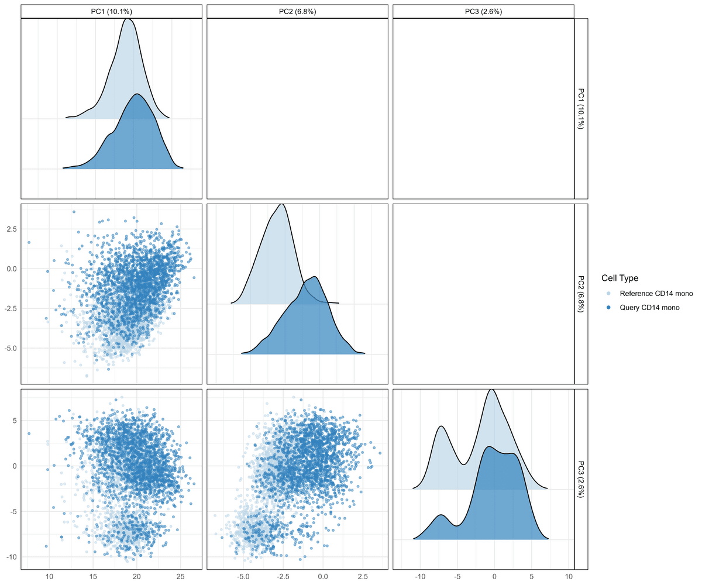
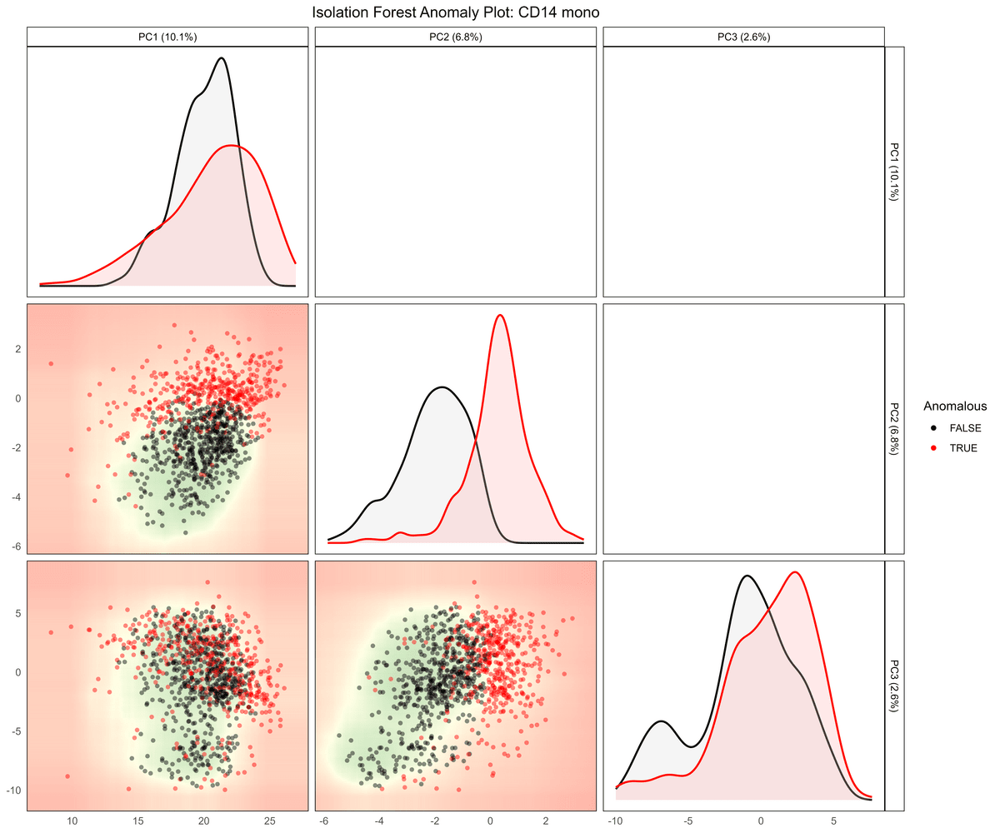
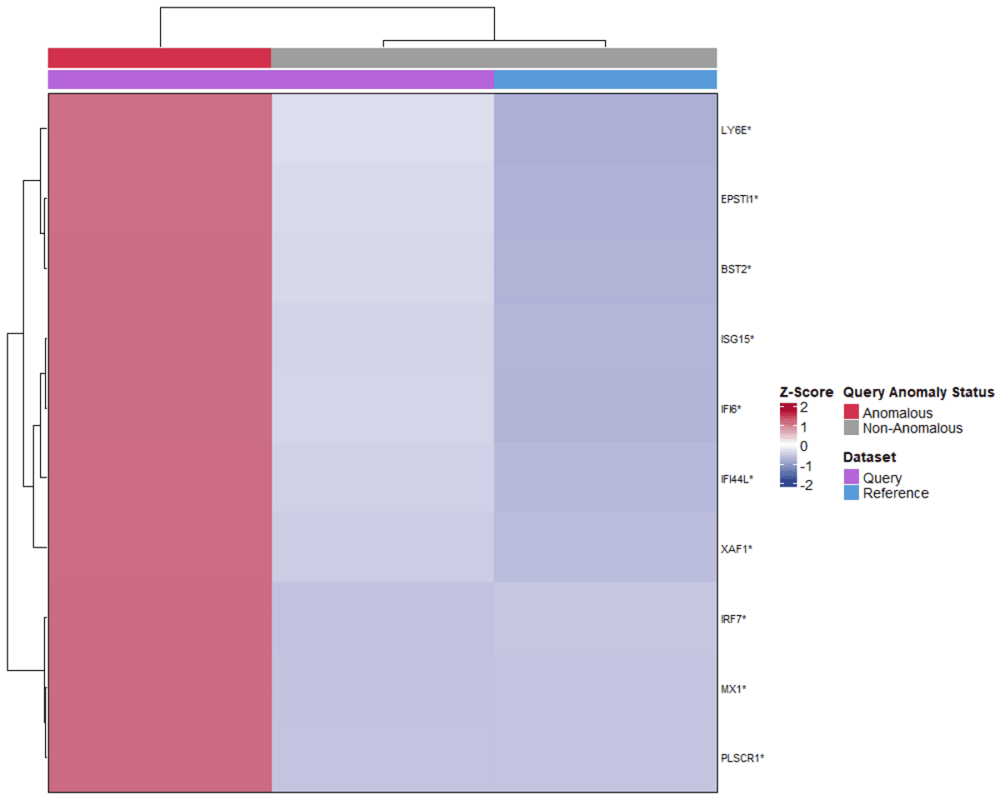
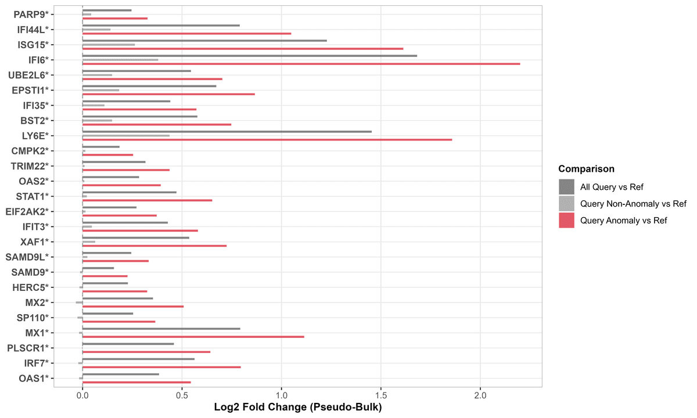
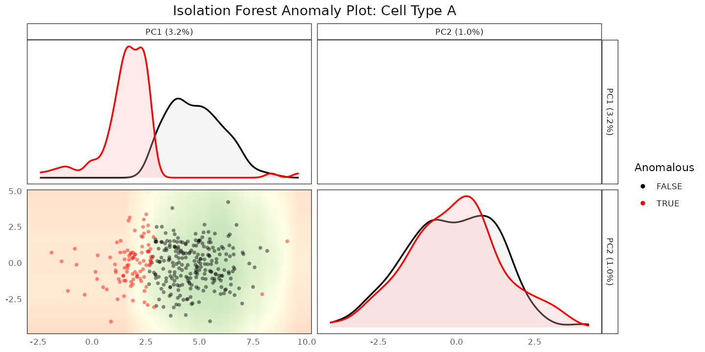

1. Introduction to `scDiagnostics`
Anthony Christidis
Core for Computational Biomedicine, Harvard Medical SchoolAndrew Ghazi
Core for Computational Biomedicine, Harvard Medical SchoolSmriti Chawla
Core for Computational Biomedicine, Harvard Medical SchoolNitesh Turaga
Core for Computational Biomedicine, Harvard Medical SchoolLudwig Geistlinger
Core for Computational Biomedicine, Harvard Medical SchoolRobert Gentleman
Core for Computational Biomedicine, Harvard Medical SchoolSource:
vignettes/Introduction.Rmd
Introduction.RmdPurpose
Automated cell type annotation - transferring labels from a reference dataset onto a new query dataset - is now a routine step in single-cell RNA-seq (scRNA-seq) analysis. It is fast and reproducible, but it is only as trustworthy as the alignment between reference and query: batch effects, cell states missing from the reference, or systematic differences in sequencing depth can all produce confidently-labeled cells that are, in fact, misannotated.
scDiagnostics provides diagnostics for exactly this
problem. Rather than another annotation method, it is a toolkit for
auditing annotations you already have: is the query
well-aligned with the reference in PCA space? Are there cells that look
anomalous relative to their assigned cell type? If so, which genes
distinguish them from the reference? Answering these questions helps
decide whether an annotation transfer can be trusted, and where to look
if it cannot.
The package operates on SingleCellExperiment
objects and is not specific to scRNA-seq: the same diagnostics apply
directly to spatial data stored as a
r BiocStyle::Biocpkg("SpatialExperiment") or
r BiocStyle::Biocpkg("SpatialFeatureExperiment") object,
without any modification, since both extend
SingleCellExperiment. Vignette
4 demonstrates this on MERFISH spatial data.
Overview of the workflow
Across the case-study vignettes in this package (see below), the same three-step diagnostic pattern recurs:
-
Project the query data onto the reference’s PCA
space and visualize how each cell type compares
(e.g.
plotCellTypePCA(),projectPCA()). -
Detect cells whose projection looks anomalous
relative to their assigned reference cell type
(
detectAnomaly()). -
Characterize what makes the anomalous cells
different, by testing for expression shifts in genes that drive the
relevant principal components (
calculateGeneShifts()).
The four panels below illustrate this on the COVID-19 case study
described in vignette
3: CD14 monocytes from a severe COVID-19 query project further along
PC1 and PC2 than the healthy reference (panel A); a subset of those
cells is flagged as anomalous by detectAnomaly() (panel B);
and calculateGeneShifts() shows that the anomalous cells
specifically over-express a panel of interferon-response genes, both as
a heatmap of per-gene z-scores (panel C) and as fold-changes relative to
the reference (panel D).
A. Projection onto reference PCA space

B. Anomaly detection within CD14 monocytes

C. Interferon-response genes distinguishing anomalous cells

D. Fold-change of the same genes, anomalous vs. non-anomalous query cells

These specific results are from the COVID-19 case study and should not be read as a general property of every dataset - see vignette 2 for how detection accuracy was benchmarked against known ground truth more broadly.
Installation
Installation from Bioconductor (Release)
Users interested in using the stable release version of the
scDiagnostics package: please follow the installation
instructions here.
This is the recommended way of installing the package.
Installation from GitHub (Development)
To install the development version of the package from Github, use the following command:
BiocManager::install("ccb-hms/scDiagnostics")To build the package vignettes upon installation use:
BiocManager::install("ccb-hms/scDiagnostics",
build_vignettes = TRUE,
dependencies = TRUE)Once you have installed the package, you can load it with the following code:
A worked example with known ground truth
Before applying detectAnomaly() to real data (as in the
case-study vignettes), it helps to see it work on data where the “right
answer” is known. We simulate two batches of cells with the splatter
package, three cell types each, and treat one batch as the reference and
the other as the query.
library(splatter)
library(scuttle)
library(scater)
library(SingleR)
set.seed(100)
# Simulate two batches of 500 cells, 3 balanced cell types
sce_ref <- mockSCE()
params <- splatEstimate(sce_ref)
params <- setParams(
params,
batchCells = c(500, 500), batch.facLoc = 0, batch.facScale = 0,
group.prob = c(1 / 3, 1 / 3, 1 / 3),
de.prob = c(0.1, 0.2, 0.2),
de.facLoc = c(0.250, 0.375, 0.375),
de.facScale = c(0.2, 0.3, 0.4),
out.prob = 0, out.facLoc = 4, out.facScale = 0.5)
simulated_data <- splatSimulate(params, method = "groups", verbose = FALSE)
# Treat Batch1 as reference, Batch2 as query
reference_data <- simulated_data[, simulated_data$Batch == "Batch1"]
query_data <- simulated_data[, simulated_data$Batch == "Batch2"]
reference_data$Cell_Type <- factor(reference_data$Group)
levels(reference_data$Cell_Type) <- c("Cell Type A", "Cell Type B", "Cell Type C")
query_data$Cell_Type <- factor(query_data$Group)
levels(query_data$Cell_Type) <- c("Cell Type A", "Cell Type B", "Cell Type C")
reference_data <- logNormCounts(reference_data)
#> Warning in .library_size_factors(assay(x, assay.type), ...): 'librarySizeFactors' is deprecated.
#> Use 'scrapper::centerSizeFactors' instead.
#> See help("Deprecated")
#> Warning in .local(x, ...): 'normalizeCounts' is deprecated.
#> Use 'scrapper::normalizeCounts' instead.
#> See help("Deprecated")
query_data <- logNormCounts(query_data)
#> Warning in .library_size_factors(assay(x, assay.type), ...): 'librarySizeFactors' is deprecated.
#> Use 'scrapper::centerSizeFactors' instead.
#> See help("Deprecated")
#> Warning in .library_size_factors(assay(x, assay.type), ...): 'normalizeCounts' is deprecated.
#> Use 'scrapper::normalizeCounts' instead.
#> See help("Deprecated")When the reference contains all three cell types,
SingleR recovers the ground-truth labels essentially
perfectly:
reference_data <- runPCA(reference_data, ncomponents = 10)
query_data <- runPCA(query_data, ncomponents = 10)
pred <- SingleR(query_data, reference_data, labels = reference_data$Cell_Type)
query_data$SingleR_annotation <- pred$labels
mean(query_data$SingleR_annotation == query_data$Cell_Type)
#> [1] 1Now suppose “Cell Type C” is missing from the reference entirely - a
common real-world scenario where a cell state present in the query
simply was not sampled in the reference. SingleR is forced
to assign those cells to the closest remaining type:
reference_missing <- reference_data[, reference_data$Cell_Type != "Cell Type C"]
reference_missing <- runPCA(reference_missing, ncomponents = 10)
pred_missing <- SingleR(query_data, reference_missing,
labels = reference_missing$Cell_Type)
query_data$SingleR_annotation_missing <- pred_missing$labels
# Where do the true Cell Type C cells get misannotated to?
table(query_data$SingleR_annotation_missing[query_data$Cell_Type == "Cell Type C"])
#>
#> Cell Type A Cell Type B
#> 173 5Most of the true “Cell Type C” cells are misannotated as “Cell Type
A”. Because we know which cells are truly misannotated in this
simulation, we can check whether detectAnomaly() actually
flags them as such, relative to the correctly-annotated “Cell Type A”
cells:
anomaly_output <- detectAnomaly(
reference_data = reference_missing,
query_data = query_data,
ref_cell_type_col = "Cell_Type",
query_cell_type_col = "SingleR_annotation_missing",
cell_types = "Cell Type A",
pc_subset = 1:2,
n_tree = 1000,
threshold_method = "absolute",
anomaly_threshold = 0.5)
is_anomalous <- anomaly_output[["Cell Type A"]]$query_anomaly
labels_a <- query_data$Cell_Type[query_data$SingleR_annotation_missing == "Cell Type A"]
# Fraction flagged as anomalous, split by true identity
tapply(is_anomalous, labels_a, mean)
#> Cell Type A Cell Type B Cell Type C
#> 0.08695652 NA 0.47398844In this run, roughly half of the truly-misannotated “Cell Type C”
cells are flagged as anomalous, compared to a small fraction of the
correctly labeled “Cell Type A” cells - detectAnomaly() is
picking up a real signal here, though far from a perfect separation. We
can visualize the same result:
plot(anomaly_output, cell_type = "Cell Type A", data_type = "query", pc_subset = 1:2)
For a systematic evaluation of how detection accuracy holds up across label noise, class imbalance, and batch effects - rather than this one simulated example - see vignette 2.
Finding the function you need
scDiagnostics groups its functions into five broad
categories. Functions marked with a vignette link are walked through in
more depth there; the rest are documented in the reference manual (e.g.
?detectAnomaly). The full,
finer-grained reference index is also available if you’d rather
browse by a more specific task.
Visualization
Visualizing cell types, marker genes, and QC/annotation scores across reference and query.
-
plotCellTypePCA(),plotCellTypeMDS()- PCA/MDS visualization of cell types across reference and query.plotCellTypePCA()is used in vignette 3 and vignette 4. -
boxplotPCA()- boxplots of PC scores by cell type. -
calculateDiscriminantSpace(),calculateSIRSpace()- projection onto a discriminant (FDA) or Sliced Inverse Regression space fit on the reference. -
plotMarkerExpression(),plotGeneExpressionDimred()- marker gene expression as density plots or on a dimensionality reduction. -
plotQCvsAnnotation(),histQCvsAnnotation(),plotGeneSetScores()- relate QC metrics and annotation confidence scores.
Dataset alignment and statistical comparison
Comparing reference and query datasets as a whole - are they well-aligned, and is any difference statistically significant?
-
comparePCA(),comparePCASubspace()- compare PCA results/subspaces between reference and query. -
calculateWassersteinDistance()- Wasserstein distance between reference and query, per cell type. -
plotPairwiseDistancesDensity()- density of pairwise distances or correlations. -
calculateGraphIntegration()- graph-based integration diagnostics. -
calculateAveragePairwiseCorrelation(),calculateCramerPValue(),calculateHotellingPValue(),calculateMMDPValue(),regressPC()- formal statistical tests/summaries of reference-query alignment.
Anomaly detection and cell distances
Flagging specific cells that look anomalous, and quantifying how far they are from reference/query populations.
-
detectAnomaly()- Isolation Forest anomaly detection on PCA projections. Used in vignette 1 above and in vignette 2, vignette 3, and vignette 4. -
calculateReconstructionError()- PCA reconstruction-error anomaly detection. Used in vignette 2. -
calculateCellSimilarityPCA()- cosine similarity between cells and PCA loadings. -
calculateCellDistances(),calculateCellDistancesSimilarity()- distances (and Bhattacharyya/Hellinger similarity) between specific cells and reference/query populations.
Marker gene alignment
Comparing which genes matter, and how they behave, between reference and query.
-
calculateGeneShifts()- expression shifts in top-loading genes between reference and query, optionally focused on anomalous cells. Used in vignette 3 and vignette 4. -
calculateHVGOverlap()- overlap of highly variable genes. -
calculateVarImpOverlap()- overlap of random-forest gene importance. -
compareMarkers()- compare marker gene expression between reference and query.
Utilities
Lower-level building blocks used internally by the functions above, and available directly for custom workflows.
-
processPCA(),projectPCA(),projectSIR()- PCA/SIR computation and projection. -
calculateCategorizationEntropy()- entropy of a cell-type-by-score category matrix.
R Session Info
R version 4.6.1 (2026-06-24)
Platform: x86_64-pc-linux-gnu
Running under: Ubuntu 24.04.5 LTS
Matrix products: default
BLAS: /usr/lib/x86_64-linux-gnu/openblas-pthread/libblas.so.3
LAPACK: /usr/lib/x86_64-linux-gnu/openblas-pthread/libopenblasp-r0.3.26.so; LAPACK version 3.12.0
locale:
[1] LC_CTYPE=C.UTF-8 LC_NUMERIC=C LC_TIME=C.UTF-8
[4] LC_COLLATE=C.UTF-8 LC_MONETARY=C.UTF-8 LC_MESSAGES=C.UTF-8
[7] LC_PAPER=C.UTF-8 LC_NAME=C LC_ADDRESS=C
[10] LC_TELEPHONE=C LC_MEASUREMENT=C.UTF-8 LC_IDENTIFICATION=C
time zone: UTC
tzcode source: system (glibc)
attached base packages:
[1] stats4 stats graphics grDevices utils datasets methods
[8] base
other attached packages:
[1] SingleR_2.14.2 scater_1.40.2
[3] ggplot2_4.0.3 scuttle_1.22.0
[5] splatter_1.36.0 SingleCellExperiment_1.34.0
[7] SummarizedExperiment_1.42.0 Biobase_2.72.0
[9] GenomicRanges_1.64.0 Seqinfo_1.2.0
[11] IRanges_2.46.0 S4Vectors_0.50.3
[13] BiocGenerics_0.58.1 generics_0.1.4
[15] MatrixGenerics_1.24.0 matrixStats_1.5.0
[17] scDiagnostics_1.7.9 BiocStyle_2.40.0
loaded via a namespace (and not attached):
[1] tidyselect_1.2.1 viridisLite_0.4.3 dplyr_1.2.1
[4] vipor_0.4.7 farver_2.1.2 viridis_0.6.5
[7] S7_0.2.2 fastmap_1.2.0 GGally_2.4.0
[10] digest_0.6.39 rsvd_1.0.5 lifecycle_1.0.5
[13] statmod_1.5.2 survival_3.8-6 magrittr_2.0.5
[16] compiler_4.6.1 rlang_1.3.0 sass_0.4.10
[19] tools_4.6.1 yaml_2.3.12 knitr_1.52
[22] labeling_0.4.3 fitdistrplus_1.2-6 S4Arrays_1.12.0
[25] htmlwidgets_1.6.4 DelayedArray_0.38.2 RColorBrewer_1.1-3
[28] abind_1.4-8 BiocParallel_1.46.0 purrr_1.2.2
[31] withr_3.0.3 desc_1.4.3 grid_4.6.1
[34] beachmat_2.28.0 edgeR_4.10.5 MASS_7.3-65
[37] scales_1.4.0 ggridges_0.5.7 cli_3.6.6
[40] rmarkdown_2.32 ragg_1.5.2 otel_0.2.0
[43] ggbeeswarm_0.7.3 cachem_1.1.0 splines_4.6.1
[46] parallel_4.6.1 BiocManager_1.30.27 XVector_0.52.0
[49] vctrs_0.7.3 Matrix_1.7-5 jsonlite_2.0.0
[52] bookdown_0.48 BiocSingular_1.28.0 BiocNeighbors_2.6.0
[55] ggrepel_0.9.8 irlba_2.3.7 beeswarm_0.4.0
[58] systemfonts_1.3.2 locfit_1.5-9.12 limma_3.68.5
[61] tidyr_1.3.2 jquerylib_0.1.4 glue_1.8.1
[64] pkgdown_2.2.1 ggstats_0.14.0 codetools_0.2-20
[67] gtable_0.3.6 ScaledMatrix_1.20.0 tibble_3.3.1
[70] pillar_1.11.1 htmltools_0.5.9 R6_2.6.1
[73] textshaping_1.0.5 isotree_0.6.1-5 evaluate_1.0.5
[76] lattice_0.22-9 backports_1.5.1 RhpcBLASctl_0.23-42
[79] bslib_0.12.0 Rcpp_1.1.2 gridExtra_2.3.1
[82] SparseArray_1.12.2 checkmate_2.3.4 xfun_0.61
[85] fs_2.1.0 pkgconfig_2.0.3